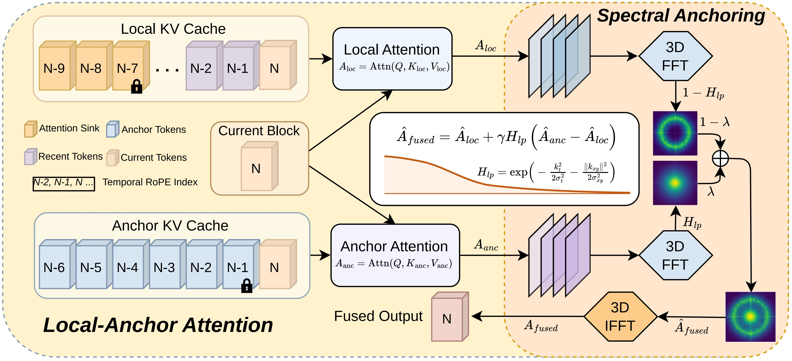
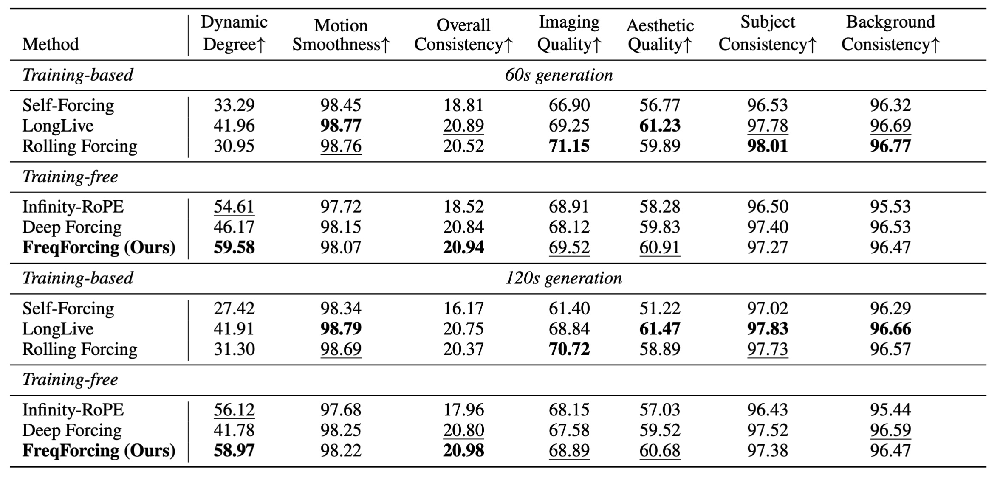

Autoregressive video diffusion models enable real-time streaming video generation. However, errors introduced during self-rollout accumulate over long horizons, manifesting as color drift, motion stagnation, and eventual visual collapse. In this paper, we characterize this phenomenon from a frequency-domain perspective: error accumulation appears as a pronounced energy drift in the low-frequency bands. We further investigate the effectiveness of attention sink in the frequency domain, and find that it improves the video quality by alleviating the spectral energy drift to some extent, but cannot fully resolve it. Motivated by the above analysis, we propose FreqForcing, a training-free framework that addresses error accumulation in long-video generation via Spectral Self-Anchoring (SSA). The proposed SSA leverages the low-frequency components of anchor attention to maintain long-horizon visual stability, while preserving dynamic motion through the high-frequency components of local attention. Our FreqForcing extends Self-Forcing pretrained on 5s clips to two-minute generation, achieving $24\times$ extrapolation. Extensive experiments show that FreqForcing outperforms existing training-free methods quantitatively and qualitatively while remaining competitive with representative training-based approaches.

Overview of FreqForcing. FreqForcing eliminates spectral energy drift during autoregressive video generation via Spectral Self-Anchoring (SSA). SSA consists of two steps. First, we design local-anchor attention branches. The local attention branch follows the standard sliding-window causal attention with attention sink to produce $A_{\mathrm{loc}}$, while the anchor attention branch uses high-quality sink frames to generate $A_{\mathrm{anc}}$. Second, we employ Spectral Anchoring to fuse the high-frequency components of $A_{\mathrm{loc}}$ with the low-frequency components of $A_{\mathrm{anc}}$, yielding the final fused output $A_{\mathrm{fused}}$.
More consistent object identities throughout long-horizon generation.

Quantitative comparison on VBench-Long. All metrics are reported on 60s and 120s generations. The best results are highlighted in bold, and the second-best results are underlined.